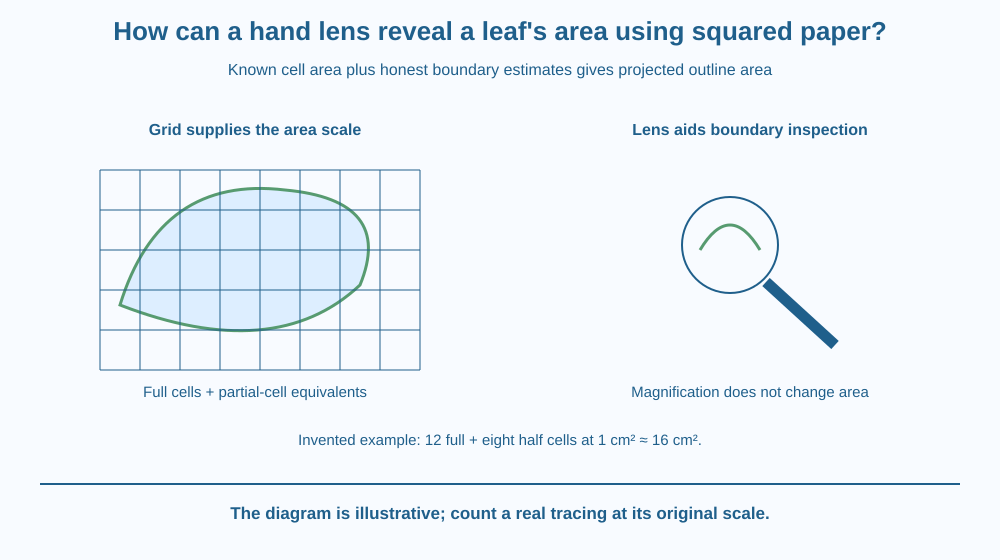

Estimate the area of a flat leaf outline using a grid. Distinguish full cells, partial cells and the area represented by one square. Explain how a hand lens can help inspect the boundary without acting as the device that directly measures area or changing the scale of the original tracing.
A leaf has an irregular outline, so multiplying one length by one width treats empty space around it as leaf. A grid offers another approach: divide the outline into small known areas and estimate how much of each is covered.
What should you do with squares only partly inside the boundary? Ignoring all of them underestimates the area, while counting all as full overestimates it. An estimate must account for the edge rather than pretending it disappears.
The hand lens is useful for inspection, but the grid and its scale supply the measurement.
Area measures two-dimensional extent. A square with side length one centimetre has an area of one square centimetre. If the grid uses a different side length, the area per cell changes with the square of that length.
To estimate an irregular outline, count cells fully inside it and add estimates for cells intersected by the boundary. Several partial cells can be combined approximately into equivalent full cells. The procedure makes the uncertainty visible near the edge.
Consider an invented tracing with 12 full one-square-centimetre cells and eight partial cells averaging about one-half each. Its estimated area is about 16 square centimetres. These are example counts, not a measured species value.
A finer grid generally reduces the area represented by each uncertain boundary cell. It can improve resolution, but it also requires more careful counting. Finer markings do not remove errors from a poor tracing, folded leaf or incorrect scale.
A hand lens can help inspect a serrated edge or decide which side of a grid line the boundary lies on. It does not make the actual leaf area larger. The observer must still count using the original grid's physical scale rather than the apparent magnified image size.
The target must be defined. A flat outline estimates the leaf's projected area in that arrangement, not both upper and lower surface areas added together. Curled, folded or overlapping material can hide parts of the intended surface.
If a photograph is used, a known scale and suitable viewing geometry are needed. An oblique image can distort area. This lesson avoids relying on an uncalibrated photograph or treating the number of screen pixels as square centimetres automatically.
Repeated counts by different readers can reveal interpretation differences at the boundary. Report an estimate with suitable precision rather than an unsupported string of decimals. The edge classification and tracing quality are part of the evidence.
Draw a leaf-shaped outline across a grid. Colour full cells one shade and boundary cells another. Put an empty box beside each boundary region for your estimated fraction.
Then add the full-cell count and the partial-cell equivalents. Keep those parts visible so another reader can understand how the total was obtained.
Draw a second, finer grid over a copy of the same outline. The shape's area has not changed, but the counting resolution has. This separates the object being measured from the method used to estimate it and explains why different estimates can be close without matching exactly.
The SVG shows an irregular leaf outline on a grid. Full interior cells and partial edge cells have different symbols. A calculation panel uses the explicitly invented 12-plus-eight-halves example.
A small lens icon points toward a boundary region while a caption states that the grid supplies area scale. The figure does not teach lens image formation, already represented by earlier optics topics.
A second coarse-versus-fine comparison indicates resolution rather than a changed leaf. The cell count in the drawing is illustrative and should not be substituted for a real traced outline's count.

Leaf area can be useful in agricultural and school investigations, but its interpretation depends on the question. One leaf's size does not automatically measure an entire crop's health or yield.
A school garden can compare tracings from suitable fallen leaves or approved samples without removing many leaves from living plants. Use identified non-irritating material and adult guidance, or work entirely from a printed outline.
Grid estimation also works for a map region or irregular paper shape when the scale is known. The transfer is mathematical: break a complex boundary into known small areas and make the remaining uncertainty explicit.
Use squared paper, a pencil and a simple printed leaf outline or a safe fallen leaf with adult permission. A hand lens is optional. Do not use unfamiliar irritating plants, and never focus sunlight with a lens.
If the leaf is curled or torn, record that limitation. Keep the original grid scale even when using a lens for closer inspection. The activity estimates projected outline area, not microscopic surface texture or the total of both leaf faces.
Two students agree on every full cell but disagree on the partial cells. Why might both estimates still be reasonable within a small range? Describe where the uncertainty comes from.
Now halve the grid's cell side length. What happens to the area per cell? Explain why four smaller cells occupy the area of one original square, avoiding the mistake of changing side length and cell area by the same factor.
What must be known to convert grid counts into area?
Answer: A — Cell counts require a known physical area scale.
Why should partial edge cells be included?
Answer: C — Boundary fractions contribute to the estimated total rather than automatically counting as zero.
Invented counts give 12 full cells and eight half cells, each full cell 1 cm². What is the estimate?
Answer: B — The estimate is 12 plus eight times one-half, or about 16 square centimetres.
Create a counting sheet that records full cells, boundary estimates, cell area and final approximate total. Include a space for tracing limitations and a second reader's estimate.
Use the invented example data or your safe paper outline. Explain why magnification does not change the leaf's actual area and why an unknown photographic scale would prevent a trustworthy square-centimetre answer. Do not claim that your result alone diagnoses plant health.
Most counting uncertainty can lie near the boundary even when the interior is easy to classify. A finer grid helps by shrinking the uncertain pieces, not by making the object different. Measurement improvement often comes from changing how uncertainty is partitioned rather than eliminating every judgement.
Leaf-area grids combine full cells and partial-cell estimates at a known scale; a hand lens aids boundary inspection but does not supply area units.